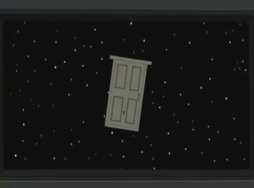

Are you going to bark all day Doggie?
Let’s get back on topic, shall we?
Nice progress on the Hazard Course mod. I look forward to playing through it.
yes i’m sorry about that, i’ll leave you guys alone
Is the alpha or beta going to be public? Or do you plan to deliver once its fully finished?
Closed.
Yes, all alphas and betas in the forseeable future will be closed. You can apply to be a tester here, and we’ll consider you in a future batch of testers. We’re going to be adding more testers as time goes on and we get closer to release.
Quit trying to rationalize a bad point. Clearly each Sector that requires the suits has some. Lambda Complex is seen with them. The facility and it’s resources being properly accessible when needed are priority. There are very few HEV suit users, and they are definitely not the most important people in the complex, or even nearly the most expensive.
Yep, we’re trying for something like that. Though we’re more making it seem like the course you’re on is recycled. You’ll see doors pointing to things such as “drum storage” or “Sector A Waste Filtration” or whatever, as well as catwalks and some inaccessible paths, though the proper direction of the course is made clear.
that is a “point” that my brain did not “absorbed” yet…
first time i see a mod team unable to recompile some maps to add things…
the hidden face of bms team should not be so “Glamour” </3 </3 </3
without hev suit , there will be no “gordon” alive after the chamber explosion … the suit makes the super-hero , it is the same in crysis2 if you played it ?
for the rest , and mostly the door
that is now for sure : the scary door

that was a way to insert your little 3 maps “mod” in-game , if it is not in-game , it is sure your work will be quickly forgotten , like uplink topic that has no new post until 3-4 month …
dude this is not a gay bar i’m sorry, if that’s what you after?
They said it was unnecessary to edit the Anomalous Mat. map, where did you read they couldn’t decompile one? Also, they are not part of BM’s team, I think everyone here knows that…
I think you didn’t realize Gordon is no super-hero, no solider or action man, he’s just the scientist who happened to wear the suit when Hell broke loose, and it didn’t make into Tony Stark either. Also the HEV suit is not much different from any piece of equipment used in a lab where manipulation of hazardous materials is required.
Sooo, I guess you didn’t even look at the screenshots posted on the modDB page? Because I don’t call turning crappy map design into originality something small. But please, go try to make yourself your own “3 little maps” so we can compare the results. Also, if Uplink has no news since 3 or 4 months, it’s probably because the guy who mapped the remake didn’t want to improve it and simply left it bite the dust.
Just a quick note to those who want the Hazard Course “stuck” onto the maps in BM, the Hazard Course is in the “Training Facility” section of Sector A. Anomalous Materials is in Sector C. There is no way of knowing where precisely Sector A is in relation to the other sectors so it can be considered completely cut off from the normal gameplay maps. Now, let us get back to discussing the Hazard Course remake itself.
Thanks!
I’m glad you stick to that idea of recycled facilities, since it explains perfectly why there are so much various environments in the Hazard Course (I suppose the original reason was to accustom the player to Half-Life’s environments).
About those doors, I’ve been thinking that not having any would make the Hazard Course quite deadly, because if anything happens in there the survey team can’t send in a medical team, thus making the training course a “sink or swim” course.
Now here’s a suggestion: I’ve been reading on combineoverwiki.net that one of the original idea (if that’s not a hasty deduction made by one of the editors) behind the Hazard Course was to make all areas linked to a hub, which goes in a way to what I mentioned above. If the idea is workable in your mod, I’d like to see the end of the course as that hub, allowing players to go back to those previous areas once they reached the end, and giving more realism to the place itself.
They also list on the wikia 4 different signs (only one is actually used) for some of the course’s areas. As much as I’d like to see them in the mod, I think they look too rusty for the actual training course. A cleaner version would certainly look nice for a hub, or at the entrance of each area.
And now to conclude on something a bit off-topic, I wanted to post here what I consider to be the first spiritual successor of Half-Life’s Hazard Course: the training from Red Faction: https://www.youtube.com/watch?v=XDLaUPV_bvE&feature=player_detailpage#t=17
Like the HC, it goes through everything you need to know to play the game, and the radio guide makes it sound less “press E to interact with people”. In a way, I kinda miss such training levels in FPS, now replaced with tips as you play the first levels in modern games. They allowed you to learn the commands at your own pace, though I admit some current video games have a good way to show you around the gameplay, so to speak.
The Hazard Course was originally an abandoned missile silo facility, which was converted to a water treatment plant, later on they decided to make from this part a training facility…
So it’s possible u see the remains of the good ol’ times if u go through the tests…
I guess!
The tunnel at the end of the course should have an access to the surface too; it’s used in the Decay’s mission “Surface Call” to travel and mentioned in “Hazardous Course”.
Have you played Decay? There are new areas added in Hazard Course, that are worth studying.
I haven’t played Decay yet, and know only what I could read about it, notably on the wikia, still yes I know that a chapter took place all around Sector A, including its topside buildings (a satellite array I think), but I didn’t remember that the tram at the end of the course was actually used in this game.
It’s not actually used. Decay doesn’t have smooth transitions between levels; there are many time skips in game. You end the level in the Hazard course’s tram, and the next one starts when you are in the surface.
i find that there are too much “hidden things” or some rules that some know and that some noob like me have no idea .
i feel like a blind that touches a lot of invisible triggers…
when i write that i think of the decompiling maps… while the mod is not done yet .
i do not visit moddb anymore , they have some hidden rules too , like prefering the australians and fucking some french guys like me [ they waited 6 month before deletion of my mod assault-strike , 2 month after it was released and one after valve became interrested to publish it on steam … valve mistaking or not to think it was a sc team update…]
when i say that your mod is not as big as a “normal” one : there is no insult , it s the same with uplink that is 4 or 5 maps long .
adding both of them in a new loop can be cool and without trashing the “hl canon”
i think you are all very nervous about bms and what it should be , you should try to take it more friendly and be productive
We know that your gay, and you are attracted to us, but we are not attracted to you, so please give it a rest.
whoa!
We’re not expecting anyone to play our training level more than a time or two.
Exactly. We make tiny allusions that the doors have on occasion been used for training emergency.
We like to take everything on the wiki with a huge, huge grain of salt. Personally I think it’s badly written, has no proper citations (“You learned this info from HL2 you say? Okay, but where?”) and is largely speculation presented as fact. For instance:
In the Half-Life texture files can be found four signs related to the Hazard Course, [b]suggesting a hub leading to the different areas was at some point considered.[/b] Out of the four, only one, "Target Range Access", is used in-game.
That’s crazy speculation considering the fact that only one was used, on a door as a sign right before the training area it pointed to. How about the more sane assumption that the others were going to be used in the same way, but were just cut/unused?
See above.
I miss training levels, too. Last game I can remember that had it’s own free-paced dedicated training level was Mirror’s Edge.
You need to stop it, too.